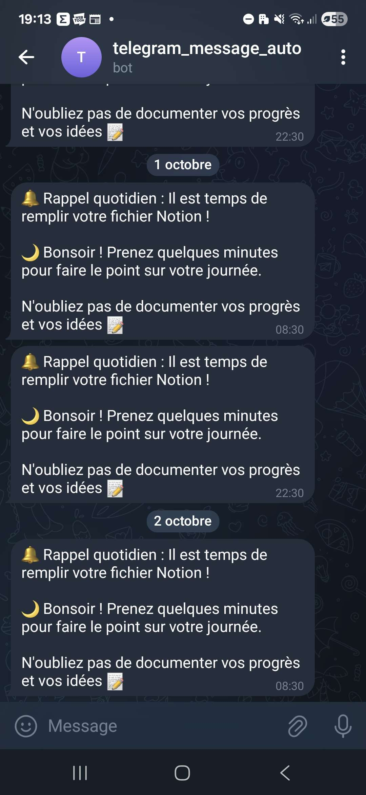
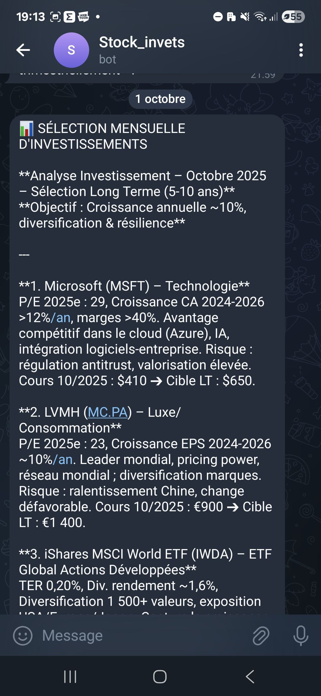

Projets IA et automatisation
J’ai exploré différentes applications de l’intelligence artificielle et des bots pour améliorer la productivité et tester de nouvelles idées.
Mes expériences avec l'IA
ChatGPT : Assistant polyvalent
J’utilise ChatGPT pour assister mes projets de programmation notamment avec la fonctionnalitée "Projets" et résoudre rapidement des problèmes complexes. Que ce soit en Python, C# ou C, cet outil permet de gagner du temps et de mieux structurer mes développements.
Bot Telegram : Daily Reminder
Développement d’un bot Telegram qui envoie un rappel quotidien pour compléter un fichier Notion. Entièrement automatisé, il permet de maintenir l’organisation personnelle et le suivi des tâches.

Bot Telegram : Suivi des investissements
Création d’un bot qui envoie chaque mois les 5 meilleures actions ou ETF à considérer, selon des critères définis. Cet outil automatise la veille financière et permet d’économiser un temps précieux dans l’analyse des marchés.
